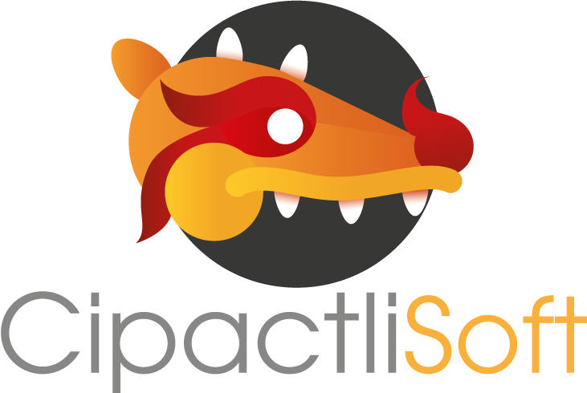

2013 — 2017
Universidad
Ingeniería en Sistemas Computacionales, generación 2013–2017. El punto de partida: mis primeros proyectos, sobre todo aplicaciones web y móviles.
01 — Trayectoria
2013 — 2017
Ingeniería en Sistemas Computacionales, generación 2013–2017. El punto de partida: mis primeros proyectos, sobre todo aplicaciones web y móviles.
2019 — 2021
Maestría en Ciencias de la Computación, generación 2019–2021. El momento de expandir mis conocimientos y llevarlos a proyectos enfocados en el ámbito laboral.
9+ años
Docente en la Universidad Bancaria de México por más de 9 años, impartiendo Programación Estructurada, Programación Orientada a Objetos, Bases de Datos Relacionales, Electrónica Básica y Matemáticas.
+5 años
Después de 5 años como docente, dí el salto a desarrollador en el departamento de sistemas, expandiendo mis conocimientos con nuevas tecnologías.
2 años
Desarrollador y diseñador del sitio web oficial de CipactliSoft, proyecto que he mantenido y optimizado durante los últimos dos años: funcionalidades clave, diseño responsive y mejora continua de la experiencia de usuario.

Ver el sitio →02 — Formación continua
03 — Sobre mí
Soy un profesional entusiasta de la programación web y el desarrollo de aplicaciones móviles. Manejo distintos software de diseño y programación, y estoy familiarizado con lenguajes orientados a objetos y gestores de bases de datos relacionales.
Lenguajes y frameworks
Bases de datos